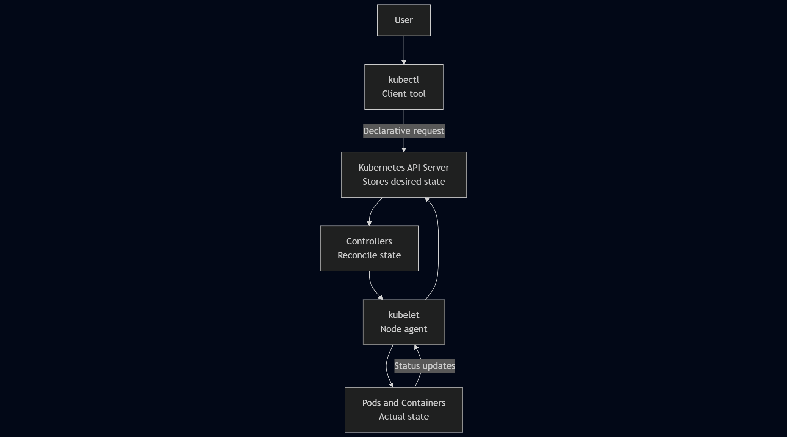
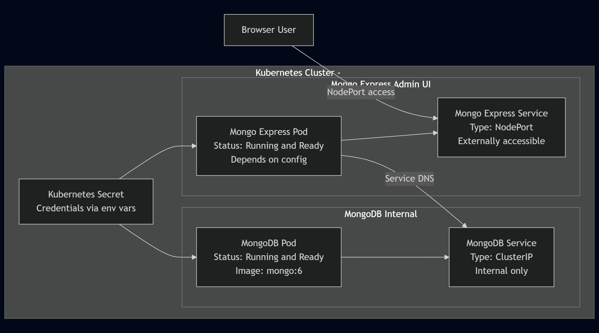

🚀 My First Deep Dive into Kubernetes
Lessons, Confusion, and Real Understanding
Kubernetes was one of those technologies I kept hearing about everywhere in DevOps conversations, cloud architecture discussions, and job descriptions, but never truly understood.
I knew Docker. I was getting comfortable with containers. But Kubernetes felt abstract, complex, and honestly… intimidating 😅
So I decided to learn it properly — not by skimming concepts, but by installing it, breaking things, fixing them, and documenting the entire experience.
This post shares what I learned, what confused me, and why the friction itself became one of the biggest learning advantages 🧠
🔄 From Docker to Kubernetes — What Actually Changed?
- 🐳 Docker runs containers
- ☸️ Kubernetes manages containers over time
With Kubernetes, the focus shifts from running an app to keeping an app healthy:
- Containers can crash and automatically restart
- Networking is abstracted and stable
- Configuration and secrets are centrally managed
- Applications are treated as systems, not single processes
Kubernetes isn’t “Docker with extra steps.” It’s a completely different way of thinking about reliability.
🎨 Visual Diagrams — How Kubernetes Finally Clicked for Me
🧩 Docker vs Kubernetes — Responsibility Shift


Docker answers “Can my app run?” Kubernetes answers “Can my app survive?”
☸️ Kubernetes Cluster Architecture
The control plane decides. Worker nodes execute. Nothing is random.
🔗 How Communication Happens in Kubernetes
You don’t execute actions — you declare intent, and Kubernetes reconciles state.
🌐 Services & Networking
Some IPs look real — but are intentionally unreachable. Kubernetes wasn’t broken. It was protecting me.
🗄️ MongoDB + Mongo Express on Kubernetes
Databases stay internal. Admin tools are explicitly exposed. Secrets are never hard-coded.
🎯 Final Thoughts
Kubernetes isn’t just a tool — it’s a philosophy of system reliability.
Learning it deeply requires patience, curiosity, and the willingness to sit with confusion until clarity emerges.
This is just the beginning of my Kubernetes journey — more to come 🚀